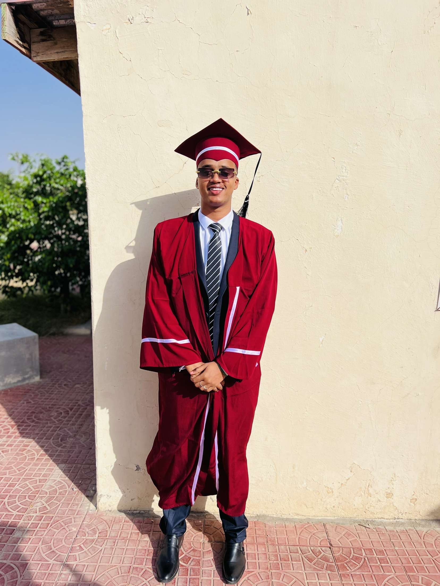

About Me
Hardworking high school graduate with strong motivation and a passion for justice and equality. I am an experienced and active member of society who gives back to my community. As a Mastercard Foundation Scholar at African Leadership University, I study Software Engineering and bring a positive attitude and a drive for social impact.
Education
African Leadership University - Kigali, Rwanda
Degree: BA in Software Engineering (Expected 2028)
Abaarso School of Science and Technology - Somaliland
High School Diploma, Graduated 2024
Skills
- HTML
- Python
- Event design and management
- Team building and leadership
- Time management and multitasking
- Cross-cultural communication
Languages
- Somali - Native
- English - Fluent
- Arabic - Advanced
Athletics
- Soccer (Center Back)
- Basketball
- Golf (Advanced)
- Frisbee (Advanced)
Interests
- International Relations
- Software Engineering
- Modern History
Community Engagement & Leadership
Community Service
I contributed significantly to the Abaarso community through long-term involvement in Gabiley Orphanage Program and the Primary Tutoring Program. I co-ran Mahadsanid, a tutoring program for school soldiers and cooks.
Events
Co-founded Environmental Day and Somali Day at Abaarso. Promoted environmental awareness and Somali cultural understanding among students and foreign faculty. Watch the Somali Day video: Somali Day Event
Constitution Graduation
Selected as a protocol student for a 3,000-person graduation ceremony hosted by the Somaliland Ministry of Constitutional Affairs in May 2022.
Clubs
Co-founded the Somali Culture Club at Abaarso to counter negative stereotypes and promote Somali heritage, dance, poetry, and songs.
Mental Health Program
Participated in a weekend program focused on self-awareness, emotional strength, and optimism.
Mentorship Program
Mentored younger students on adjusting to boarding school life and anti-bullying as part of the Abaarso Leadership Program.
YECO
Founder of Youth Education Care Organization, which supports students in financial need with tuition, supplies, and charitable help.
Contact
- Email: s.adam@alustudent.com
- LinkedIn: Saddam Daahir Adam
- Phone: +252 63 301 0989